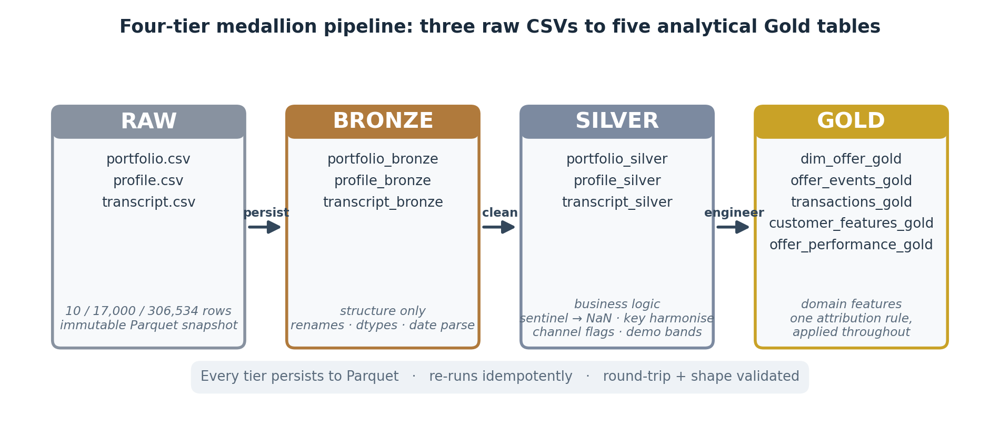
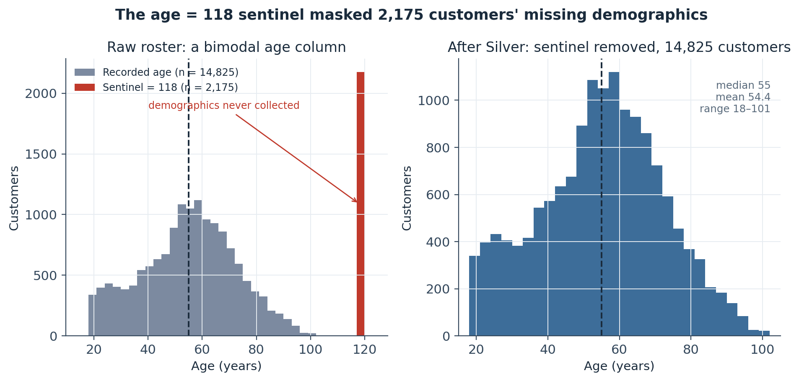
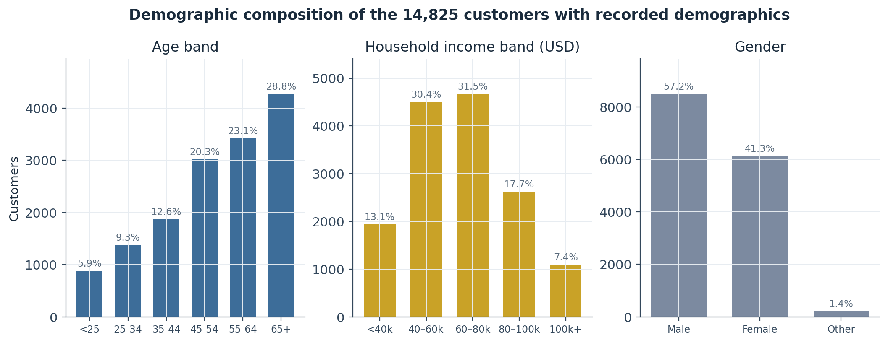
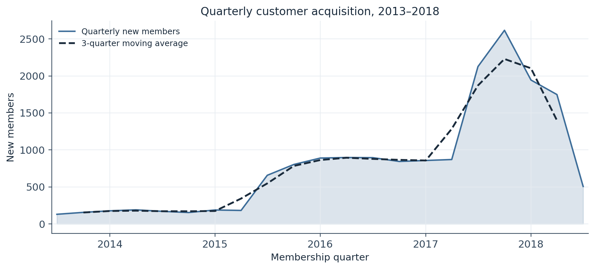
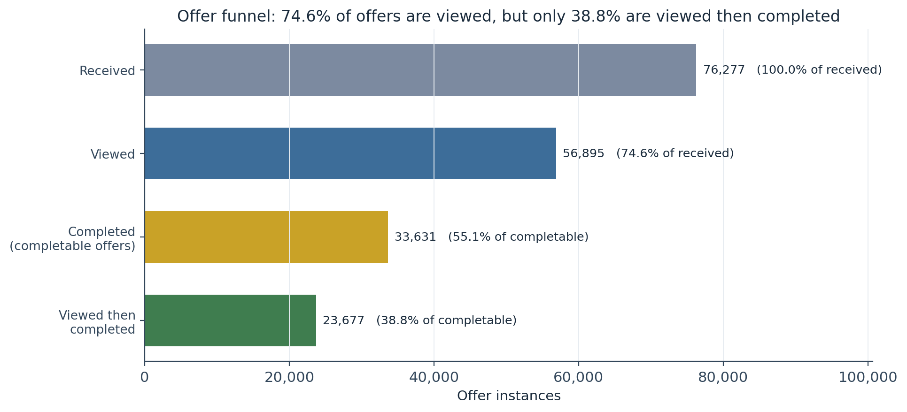
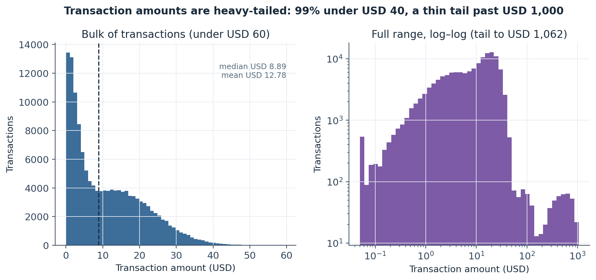
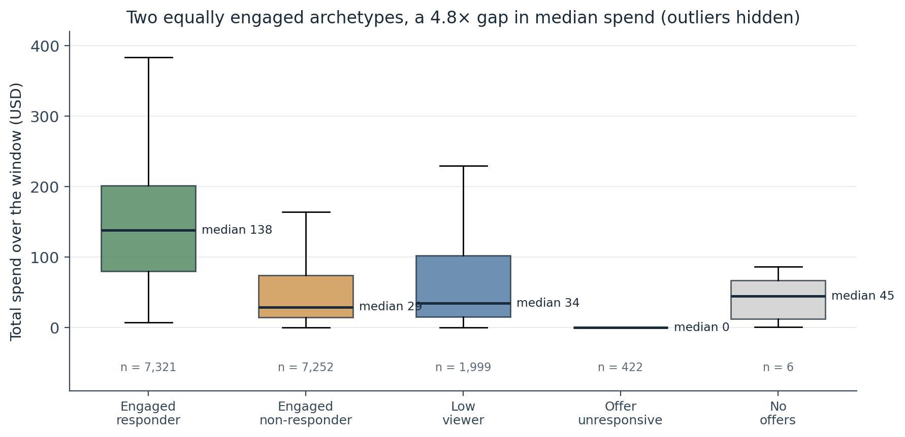
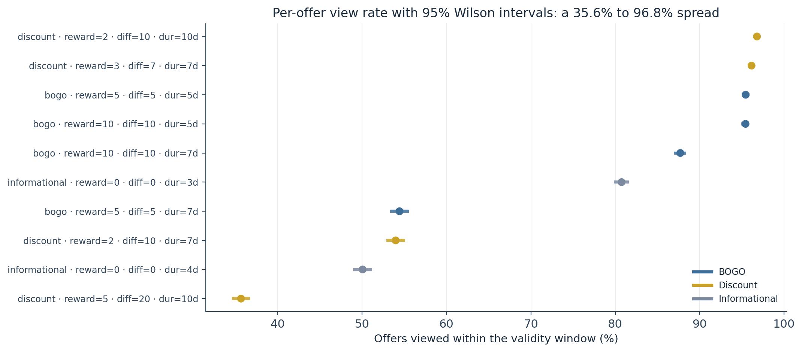

A Medallion Pipeline for Simulated Offer-Response Data: Sentinel Resolution, Dict-Schema Harmonisation, and an Idempotent Attribution Layer
Turning a 10-row offer catalogue, a 17,000-row customer roster, and a 306,534-event log into five validated Gold tables — with a Bronze → Silver → Gold contract, one attribution rule stated once, and a funnel that separates viewing an offer from completing it anyway.
A three-layer medallion ETL pipeline that feeds a five-notebook study of offer response on the Starbucks/Udacity capstone data. Sentinel resolution: age = 118 masks 2,175 customers (12.79%) whose demographics were never collected — invisible to a null count until Silver converts it. Dict-schema harmonisation: the event log stores Python dicts as strings whose offer-id key differs by event type ('offer id' vs 'offer_id'); a one-line or fallback prevents a silent half-funnel loss on every join. Attribution: one rule — viewed before the transaction, transaction inside the validity window, last-click tie-break — stated once and applied across the funnel, transaction, and offer-performance tables. The carry-forward finding: 55.1% of completable offers are completed but only 38.8% are viewed then completed, and the two most-engaged customer archetypes (43% / 43% of the base) diverge 4.8× in median spend on comparable exposure. Output: five Gold Parquet tables, validated for round-trip integrity, shape, and determinism.
medallion architecture, ETL pipeline, bronze silver gold, sentinel encoding, data quality audit, last-click attribution, offer funnel, intention-to-treat, feature engineering, Parquet, idempotent pipeline, data validation, Starbucks capstone, offer response, Python, pandas
Overview
This is the extract–transform–load stage of a five-notebook study of how customers respond to promotional offers, built on the Starbucks/Udacity “capstone” simulated-offers dataset. It has one job: turn three raw CSV files — a 10-row offer catalogue, a 17,000-row customer roster, and a 306,534-row event log spanning a 714-hour observation window — into a set of analytical tables that the segmentation, experiment-design, quasi-experimental, and uplift notebooks can each load without re-running any upstream logic. The pipeline produces those tables through a three-layer medallion architecture (Bronze → Silver → Gold), where each layer has a strict contract, a distinct fault-isolation boundary, and a persisted Parquet snapshot any consumer can reload independently.
Three structural problems in the raw data shape the whole pipeline, and each is resolved at exactly one layer:
- A sentinel age.
profile.csvencodes “demographics not collected at signup” asage = 118— a structurally impossible value that co-occurs exactly with missinggenderand missingincomeon 2,175 rows (12.79%). A missing-value summary run on the raw frame reports zero nulls inage; the gap is invisible until Silver converts the sentinel toNaN. - A dict stored as a string, with an inconsistent key. The event log’s
valuecolumn holds Python dict literals serialised as text. Received and viewed events key the offer identifier as'offer id'(with a space); completed events key it as'offer_id'(with an underscore); transactions carry no offer key at all. A naive lookup on one spelling silently drops half the funnel on every join. - A serialised channel list. The offer catalogue’s
channelscolumn is a stringified list (['web', 'email', 'mobile']) that encodes up to four binary distribution flags as one text field — unusable by any model until parsed.
Two findings the pipeline surfaces but does not resolve are handed forward to the analytical notebooks. First, of the completable (non-informational) offer instances, 55.1% are recorded as completed, but only 38.8% are viewed and then completed in the correct order — a meaningful share of “completions” come from customers who crossed the spending threshold without ever seeing the offer. Second, the customer base splits almost exactly in half between two archetypes that view most of their offers but diverge sharply on whether that viewing converts. Both point at the same question notebooks 03–05 take up directly: does offer exposure cause spending, or merely correlate with customers who would have spent anyway?
Pipeline architecture
Each layer knows strictly more about the data than the one before it. Bronze knows what the data looks like; Silver knows what it means; Gold produces the analytical surface. The contract for each layer — and, just as important, what each layer must not do — is fixed (Figure 1, Table 1).
Figure 1
The Bronze → Silver → Gold Medallion Pipeline

Note. Every tier persists to Parquet, re-runs idempotently, and is validated for round-trip integrity and shape. Arrows add knowledge, never rows: the customer roster is 17,000 records at Raw, Bronze, Silver, and in the customer-feature Gold table.
Table 1
Layer Contracts in the Medallion Pipeline
| Layer | Knows | Does | Must not do | Persisted as |
|---|---|---|---|---|
| Raw | nothing | byte-for-byte Parquet snapshot of the three source CSVs | any transformation | data/raw/parquet/*.parquet |
| Bronze | physical structure | column rename to snake_case, join-key rename (id → offer_id / customer_id), dtype enforcement, YYYYMMDD → datetime, primary-key dedup check |
replace sentinels, parse dicts, derive columns | *_bronze.parquet |
| Silver | domain meaning | sentinel 118 → NaN + has_demographics flag, parse the value dict and harmonise its offer-id key, expand channels into four flags, cut age/income/cohort bands, order the event categorical |
impute, attribute transactions, drop rows | *_silver.parquet |
| Gold | analytical intent | funnel reconstruction, last-click attribution, customer- and offer-level aggregates, engagement archetypes | drop rows, touch Bronze or Raw | five *_gold.parquet tables |
Note. Row counts are invariant within each source: portfolio 10, profile 17,000, transcript 306,534 across Raw, Bronze, and Silver. Gold re-grains deliberately — to the offer instance, the transaction, and the customer.
The five Gold tables and their grains are fixed for the lifetime of the project (Table 2). Every downstream notebook loads from data/gold/ and touches nothing upstream in normal operation.
Table 2
The Five Gold Tables
| Table | Grain | Rows × cols | Primary purpose |
|---|---|---|---|
dim_offer_gold |
one row per offer | 10 × 15 | offer catalogue with channel flags and chart labels |
offer_events_gold |
one row per (customer, offer, received_time) |
76,277 × 19 | funnel flags — received / viewed / completed — plus latencies |
transactions_gold |
one row per transaction | 138,953 × 10 | last-click offer attribution |
customer_features_gold |
one row per customer | 17,000 × 30 | RFM aggregates, offer-response summary, engagement archetype |
offer_performance_gold |
one row per offer | 10 × 23 | per-offer funnel rates and mean spend per exposure |
Note. Combined footprint ≈ 6.6 MB on disk. Every downstream notebook loads these five files and nothing upstream.
Raw ingestion and audit
Each source loads into memory and is written to Parquet before any transformation, as an immutable lineage anchor. A structural audit then runs against the untouched frames; no cleaning happens here, only diagnosis (Table 3).
Table 3
The Three Source Tables and the Structural Issue Each Carries
| Source | Grain | Shape | Structural issue found | Resolved at |
|---|---|---|---|---|
portfolio.csv |
one row per offer | 10 × 7 | channels is a stringified Python list; id is an ambiguous join key |
Bronze (rename) → Silver (parse to flags) |
profile.csv |
one row per customer | 17,000 × 6 | age = 118 sentinel on 2,175 rows; became_member_on is a YYYYMMDD integer |
Bronze (date parse) → Silver (sentinel → NaN) |
transcript.csv |
one row per event | 306,534 × 5 | value holds dict literals as strings; offer-id key differs by event type |
Silver (ast.literal_eval + key harmonise) |
Note. A generic missing-value summary on the raw frames reports only structurally-visible nulls — it sees none of the three issues above. Each is found by a targeted diagnostic and fixed at the layer that owns its semantics.
The sentinel age
Among the 17,000 customers, gender and income are each missing on exactly 2,175 rows (12.79%) — an identical count that is not a coincidence. Every one of those rows carries age = 118, and no row outside that set is missing either field. A human aged 118 is structurally impossible, and the IQR fence (Q3 + 1.5·IQR = 115) flags all 2,175 as outliers, but a z-score test does not: the sentinel inflates the mean to 62.53 and the SD to 26.74 enough to hide 118 within three SDs of its own distorted centre. The co-occurrence check — not a univariate outlier test — is the right instrument here.
Silver replaces the exact value 118 with NaN and derives one has_demographics boolean so no downstream notebook re-implements the three-column mask. After the replacement, the age column collapses from a bimodal artefact to a single coherent population: mean 54.4, median 55, range 18–101, near-zero skew (Figure 2).
Figure 2
The age = 118 Sentinel Masked 2,175 Customers’ Missing Demographics

Note. The 2,175 sentinel customers are retained in every table — only their demographic fields become NaN. Left panel n = 17,000; right panel n = 14,825 with recorded demographics.
Among the 14,825 customers with demographics, the roster skews older and middle-income: 28.8% are aged 65 or over, 72% are 45 or over, the two central income bands (USD 40–80k) hold 62%, and gender runs 57.2% male, 41.3% female, 1.4% other (Figure 3). Membership acquisition accelerates sharply from 2015, peaking in 2017–2018 — the final stretch of the observation window (Figure 4).
Figure 3
Demographic Composition of the 14,825 Customers with Recorded Demographics

Note. Bands are cut at conventional life-stage and income points (age 25/35/45/55/65; income USD 40k/60k/80k/100k), not by quantile — so the bar heights carry a real distributional signal.
Figure 4
Quarterly Customer Acquisition, 2013–2018

Note. Membership tenure spans 2013-07-29 to 2018-07-26. The final quarter is partial (the roster is a snapshot mid-2018), which accounts for its sharp drop.
The event log’s three dict schemas
The transcript’s 306,534 events are 45.3% transactions (138,953), 24.9% offers received (76,277), 18.8% offers viewed (57,725), and 11.0% offers completed (33,579). Each event type stores its value payload as a Python dict serialised to text, with a schema that varies by type:
offer received/offer viewed→{'offer id': '9b98b8...'}— key is'offer id', with a spaceoffer completed→{'offer_id': '2906b8...', 'reward': 2}— key is'offer_id', with an underscore, plus the reward paidtransaction→{'amount': 8.20}— no offer key at all
Silver parses each string with ast.literal_eval (the single-quoted literals are valid Python but invalid JSON) and extracts the identifier with a two-spelling fallback — d.get('offer_id') or d.get('offer id') — in one pass. Without that fallback, a lookup on 'offer_id' alone returns None for every received and viewed event, and every funnel join that matches events by offer silently loses its received/viewed side. The parsed frame is then stably sorted on (customer_id, time, event) with the event as an ordered categorical (received < viewed < completed < transaction), so that the “first” event in any later groupby is deterministic.
Bronze layer — structural cleaning
Bronze applies structural normalisation only; its contract is losslessness, so a hash comparison against the raw Parquet isolates exactly the columns Bronze was documented to touch. Per table: column names are lower-cased and spaced-to-underscored; the pandas index artefact Unnamed: 0 becomes row_id; the join key id becomes offer_id (portfolio) or customer_id (profile), and person becomes customer_id (transcript), so all three tables share one key spelling. reward, difficulty, duration become nullable Int64; time becomes Int64 hours; became_member_on is parsed from its YYYYMMDD integer to datetime64, confirming a span of 2013-07-29 to 2018-07-26. The age = 118 sentinel, the channels string, and the value dict-string all pass through unchanged — their issues are semantic, and semantics belong to Silver. Shapes are invariant: 10 × 7, 17,000 × 6, 306,534 × 5.
Silver layer — business-logic cleaning
Silver knows what the data means. It applies four transformations Bronze was forbidden to:
- Channel-flag derivation.
ast.literal_evalrestores thechannelslist; four binary indicators (has_email,has_mobile,has_social,has_web) and achannel_count(2–4) replace it.has_emailturns out constant at 1 across all ten offers — every offer goes out by email — so it carries no discriminating power;has_webis the only flag that varies meaningfully (two offers omit it). Anis_informationalflag is set once here because informational offers have a structural downstream consequence: with no completion criterion, theirwas_completedmust beNaN, not0. - Sentinel resolution.
age == 118→NaN;has_demographics = age.notna() & gender.notna() & income.notna()splits the base cleanly into 14,825 / 2,175 with no partial-demographic rows. - Band cutting. Age bands
[<25, 25–34, 35–44, 45–54, 55–64, 65+], income bands[<40k, 40–60k, 60–80k, 80–100k, 100k+], and membership cohort columns (member_year,member_yearquarter) are derived for downstream segmentation (Figures 3–4). - Dict parsing and key harmonisation (above). The result adds
offer_id,amount,reward_received,time_days; the originalvalueis renamedvalue_rawand kept as an audit trail rather than dropped.
The Silver transcript’s null pattern is now structural rather than dirty: amount is NaN on the 54.7% of rows that are offer events, offer_id is NaN on the 45.3% that are transactions, reward_received is NaN on the 89% that are not completions. Each null rate encodes which event type a row belongs to.
Gold layer — domain feature engineering
The attribution rule
A transaction is attributed to an offer instance when both conditions hold: (1) the customer viewed the offer before the transaction (view_time ≤ txn_time), and (2) the transaction fell inside the validity window (received_time ≤ txn_time ≤ received_time + duration × 24 h). If several viewed instances qualify at once, the one with the most recent view wins (last-click); if none qualify, the transaction is organic. This is the conventional rule for the Starbucks/Udacity capstone. It is stated here, once, and applied identically in the funnel table, the transaction table, and the offer-performance table — so every downstream reference to “attributed spend” or “offer completion” rests on the same substrate.
Offer dimension
dim_offer_gold passes the ten-offer catalogue through with duration_hours (attribution math runs in hours) and a human-readable offer_label used as a chart axis label everywhere downstream. The catalogue is small and static (Table 4, with its funnel performance).
Offer-events funnel reconstruction
offer_events_gold is the structurally hardest build: one row per offer instance — a unique (customer, offer, received_time) triple — accumulating funnel state. Three problems drive the design. Multiple receipts: 11,718 (customer, offer) pairs receive the same offer more than once in the window, so a cumcount() instance_idx prevents a view at hour 50 from being attributed to both a receipt at hour 0 and one at hour 300. Window-scoped lookups: views and completions are matched to an instance only if they fall in [received_time, window_end_time], then collapsed to the earliest per instance. Semantic nulls: informational offers get was_completed = NaN, which .sum() treats as 0 and .mean() excludes from the denominator — both correct for funnel rates.
The funnel produces 76,277 instances. 56,895 (74.6%) are viewed within the window — the raw transcript has 57,725 view events, and the 830-event difference is views that landed outside every validity window and are correctly excluded. Of the completable instances, 33,631 (55.1%) are completed, but only 23,677 (38.8%) are viewed and then completed in order (Figure 5). That 16-point gap is the intention-to-treat versus treatment-on-treated distinction, embedded in the schema: a large minority of “completions” are customers who hit the spending threshold without the offer ever entering their awareness.
Figure 5
Offer Funnel: 74.6% of Offers Are Viewed, but Only 38.8% Are Viewed Then Completed

Note. “Completable” excludes the two informational offers (15,235 instances), which have no completion criterion. The drop from 55.1% completed to 38.8% viewed-then-completed is the share of completions that cannot be attributed to the offer having been seen.
Transaction attribution
transactions_gold assigns each of the 138,953 transactions to an offer instance or marks it organic. A surrogate txn_id is assigned first (transactions have no natural key); the candidate pool is restricted to viewed instances (56,895) before the merge; the two-condition window filter reduces the merged cross-product to 122,677 valid (transaction, instance) pairs for 104,657 transactions — so many transactions face several eligible instances at once, resolved by the last-click sort-then-first().
The result: 104,657 (75.3%) of transactions are attributed and 34,296 (24.7%) are organic; in spend terms, attributed transactions carry USD 1,347,865 (75.9%) of the USD 1,775,452 total. The near-match between the 75.3% count share and 75.9% spend share means attributed transactions are only marginally larger on average (USD 12.88 vs USD 12.47) — a mechanical difference with no causal reading. Transaction amounts themselves are severely heavy-tailed: median USD 8.89, mean USD 12.78, 99th percentile USD 40.02, maximum USD 1,062.28 (Figure 6).
Figure 6
Transaction Amounts Are Heavy-Tailed: 99% Under USD 40, a Thin Tail Past USD 1,000

Note. Skew 19.2, kurtosis 451. The tail is genuine but rare — the mean sits above the 60th percentile, which is why median spend is the reference statistic in the analytical notebooks.
Customer features and engagement archetypes
customer_features_gold is one row per customer (17,000 × 30): recency–frequency–monetary aggregates (recency anchored to the fixed window close, not now(), so the feature is reproducible), an offer-response summary, and a single engagement_archetype assigned by strict priority on view rate and conditional completion rate:
| Archetype | Rule | n | Share |
|---|---|---|---|
engaged_responder |
view rate ≥ 0.5 and completion-given-viewed ≥ 0.5 | 7,321 | 43.1% |
engaged_non_responder |
view rate ≥ 0.5 and completion-given-viewed < 0.5 | 7,252 | 42.7% |
low_viewer |
view rate < 0.5 | 1,999 | 11.8% |
offer_unresponsive |
received offers, made zero transactions | 422 | 2.5% |
no_offers |
received zero offers | 6 | 0.04% |
The two dominant archetypes together are 85.7% of the base and are equally engaged — both view most of their offers — yet their median spend over the window differs by roughly 4.8×: USD 138 for responders (IQR 80–201) against USD 29 for non-responders (IQR 14–74), with non-overlapping IQRs (Figure 7). Whether that premium is a causal effect of completing offers, or simply reflects that responders are higher-spending customers who would have crossed the threshold anyway, is the question the downstream causal notebooks exist to answer.
Figure 7
Two Equally Engaged Archetypes, a 4.8× Gap in Median Spend

Note. The two boxes’ interquartile ranges do not overlap, so the gap is a robust distributional difference, not an outlier artefact. Whiskers are 1.5·IQR; extreme values (up to ~USD 1,600) are omitted for readability.
Offer performance
offer_performance_gold aggregates the same funnel and attribution data to the offer level, exposing both an intention-to-treat rate (completion_rate = completed ÷ received) and its treatment-on-treated analogue (view_to_completion_rate = viewed-then-completed ÷ viewed), plus mean attributed spend per exposure (denominator = instances distributed, so zero-spend instances count — excluding them would introduce survivorship bias). Assignment is near-uniform (7,571–7,677 instances per offer), so the wide performance spread is a genuine response signal, not an exposure imbalance (Table 4). View rate ranges from 35.6% (the narrow, hard-to-clear discount: reward 5, spend 20, web+email only) to 96.8% (the easy discount: reward 2, spend 10, all four channels), with tight 95% Wilson intervals at n ≈ 7,600 (Figure 8).
Table 4
The Ten-Offer Catalogue and Its Funnel Performance
| Offer | Type | Reward | Spend req. | Duration | Channels | Received | View rate | Completion rate (ITT) | View→completion | Mean spend / exposure |
|---|---|---|---|---|---|---|---|---|---|---|
| BOGO r5 / d5 / 7d | bogo | 5 | 5 | 7 d | web, email, mobile | 7,677 | 54.4% | 56.7% | 51.1% | USD 13.31 |
| BOGO r5 / d5 / 5d | bogo | 5 | 5 | 5 d | web, email, mobile, social | 7,571 | 95.5% | 56.7% | 49.1% | USD 20.21 |
| BOGO r10 / d10 / 7d | bogo | 10 | 10 | 7 d | email, mobile, social | 7,658 | 87.7% | 48.2% | 39.1% | USD 22.20 |
| BOGO r10 / d10 / 5d | bogo | 10 | 10 | 5 d | web, email, mobile, social | 7,593 | 95.5% | 43.9% | 38.2% | USD 20.17 |
| Discount r2 / d10 / 10d | discount | 2 | 10 | 10 d | web, email, mobile, social | 7,597 | 96.8% | 70.2% | 63.6% | USD 34.28 |
| Discount r2 / d10 / 7d | discount | 2 | 10 | 7 d | web, email, mobile | 7,632 | 54.0% | 52.7% | 52.2% | USD 13.64 |
| Discount r3 / d7 / 7d | discount | 3 | 7 | 7 d | web, email, mobile, social | 7,646 | 96.2% | 67.6% | 60.0% | USD 25.67 |
| Discount r5 / d20 / 10d | discount | 5 | 20 | 10 d | web, email | 7,668 | 35.6% | 44.9% | 49.8% | USD 10.24 |
| Informational / 4d | informational | 0 | 0 | 4 d | web, email, mobile | 7,617 | 50.0% | — | — | USD 7.47 |
| Informational / 3d | informational | 0 | 0 | 3 d | email, mobile, social | 7,618 | 80.8% | — | — | USD 9.62 |
Note. “Spend req.” is the difficulty — the amount that must be spent to complete. ITT = intention-to-treat (completed ÷ received); view→completion is the treatment-on-treated analogue (viewed-then-completed ÷ viewed). Informational offers have no completion criterion. Mean spend per exposure divides attributed spend by all instances distributed, including those that generated none.
Figure 8
Per-Offer View Rate with 95% Wilson Intervals: a 35.6% to 96.8% Spread

Note. Wilson score intervals (Wilson, 1927) at n ≈ 7,600 per offer. The two informational offers (no reward incentive) sit mid-distribution at 50% and 81%, so engagement is driven substantially by channel breadth and offer format, not the financial incentive alone.
Validation
Two independent passes confirm the Gold layer is correctly serialised and analytically ready (Table 5). A round-trip re-reads each Parquet file and asserts a zero null rate on a key column — simultaneously a losslessness check across the dtype spectrum (nullable integer, nullable float, string, ordered categorical, boolean). A shape verification asserts each table against hardcoded expected dimensions; a deviation is a pipeline bug, not a config value. All checks pass. The two attribution-sensitive tables — offer_events_gold at 76,277 rows and transactions_gold at 138,953 — match exactly, confirming the window filter and last-click groupby are deterministic and the pipeline is idempotent.
Table 5
Gold-Layer Validation Results
| Table | Round-trip key column | Null rate | Shape check |
|---|---|---|---|
dim_offer_gold |
offer_id |
0.00% | pass |
offer_events_gold |
was_viewed |
0.00% | pass (76,277 × 19) |
transactions_gold |
amount |
0.00% | pass (138,953 × 10) |
customer_features_gold |
customer_id |
0.00% | pass |
offer_performance_gold |
view_rate |
0.00% | pass |
Note. Each table is re-read from disk, not checked in memory, so a pass is also a Parquet write-read losslessness assertion.
Carry-forward findings
Four facts every downstream notebook must account for:
- The ITT / TOT gap. 55.1% of completable instances are completed; only 38.8% are viewed then completed. Raw completion rate overstates the share of customers genuinely influenced by seeing an offer — an intention-to-treat versus treatment-on-treated distinction that the experiment-design and quasi-experimental notebooks build on directly.
- The two engaged archetypes. 43% responders, 43% non-responders, comparable offer exposure, ~4.8× median-spend gap. This is the natural comparison for any causal analysis of offer effectiveness — and the place where a descriptive read is not enough.
has_demographicsis a hard partition. 2,175 customers (12.8%) have no age, gender, or income. Any covariate-adjusted or matched analysis must decide explicitly whether to drop them or model the missingness; a silent inner join loses them.- Attribution is a modelling choice, not ground truth. The last-click rule with a view-before-purchase gate is one defensible convention; first-click and fractional credit are others. “Attributed” means a viewed offer’s window covered the transaction — nothing causal. The 24.7% organic baseline is the reference the causal notebooks estimate incremental effects against.
Tools and references
Built in Python with pandas and pyarrow for the medallion layers; ast.literal_eval for the dict-string parse; numpy and scipy for the aggregates and the Wilson score intervals in Figure 8. The dataset is the simulated offer-response data from the Starbucks / Udacity Data Scientist Nanodegree capstone, distributed on Kaggle.
Harris, C. R., Millman, K. J., van der Walt, S. J., Gommers, R., Virtanen, P., Cournapeau, D., Wieser, E., Taylor, J., Berg, S., Smith, N. J., Kern, R., Picus, M., Hoyer, S., van Kerkwijk, M. H., Brett, M., Haldane, A., del Río, J. F., Wiebe, M., Peterson, P., … Oliphant, T. E. (2020). Array programming with NumPy. Nature, 585, 357–362. https://doi.org/10.1038/s41586-020-2649-2
The pandas development team. (2020). pandas-dev/pandas: Pandas (Version latest) [Computer software]. Zenodo. https://doi.org/10.5281/zenodo.3509134
Virtanen, P., Gommers, R., Oliphant, T. E., Haberland, M., Reddy, T., Cournapeau, D., Burovski, E., Peterson, P., Weckesser, W., Bright, J., van der Walt, S. J., Brett, M., Wilson, J., Millman, K. J., Mayorov, N., Nelson, A. R. J., Jones, E., Kern, R., Larson, E., … Vázquez-Baeza, Y. (2020). SciPy 1.0: Fundamental algorithms for scientific computing in Python. Nature Methods, 17, 261–272. https://doi.org/10.1038/s41592-019-0686-2
Wilson, E. B. (1927). Probable inference, the law of succession, and statistical inference. Journal of the American Statistical Association, 22(158), 209–212. https://doi.org/10.1080/01621459.1927.10502953
Starbucks, & Udacity. (2018). Starbucks Capstone Challenge simulated offers dataset [Data set]. Retrieved from Kaggle (I. Muliar, mirror). https://www.kaggle.com/datasets/ihormuliar/starbucks-customer-data
Pipeline and figures by the author. Every figure and headline number here was regenerated from the raw CSVs by a standalone deterministic rebuild; all values match the notebook’s executed outputs. The five Gold Parquet tables described here are the sole data input for every downstream notebook in this study.